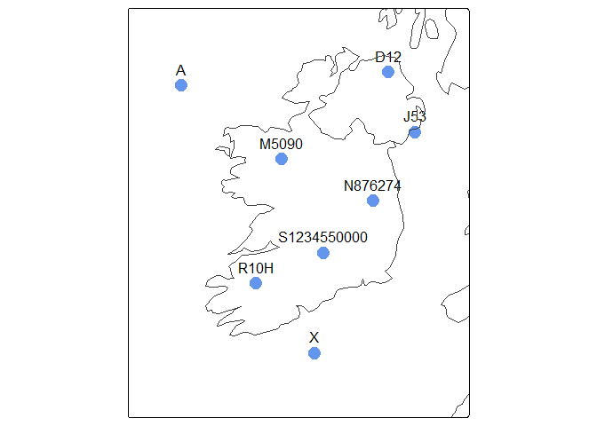

Convert between Irish grid references and Irish Grid coordinates, or an sf object in any coordinate reference system.
An Irish grid reference is a way of referring to a square of certain size on the Irish Grid geographic coordinate system (EPSG:29903). Rather than an X and Y coordinate, an Irish grid reference consists of a letter, optionally followed by an easting, northing and possibly a final letter. The size of the square referred to - the precision of the Irish grid reference - is defined by the number of digits in the easting and northing and presence or absence of a final letter. Spaces are sometimes inserted between letters, easting and northing for legibility.
For example:
- “N” refers to a particular 100 km square (“N” is the square highlighted in orange in the igr logo)
- “N16” refers to a particular 10 km square within “N”
- “N16K” is the tetrad form of grid reference and refers to a particular 2 km square within “N16”
- “N 12345 67890” refers to a particular 1 m square
This package supports Irish grid references of 100 km, 10 km, 2 km, 1 km, 100 m, 10 m, and 1 m precision. Datasets containing a mix of precision are supported.
Irish grid references can be converted to and from Irish Grid coordinates (X and Y), or to and from sf (simple feature) objects in any coordinate reference system.
Irish grid references can be converted to point locations or polygons. Point locations can be either the south-west corner or the centroid of each Irish grid reference. Polygons each span the entire extent of an Irish grid reference - the size of each polygon is precision-aware.
Installation
To install the production version of igr from CRAN:
install.packages("igr")To install the development version of igr from GitHub:
# Install remotes package if needed
install.packages("remotes")
# Install development version of igr package from GitHub
remotes::install_github("digitalnature-ie/igr")Usage
To check validity of Irish grid references:
-
igr_is_valid()indicates which elements in a character vector are valid Irish grid references
To convert from Irish grid references:
-
igr_to_ig()converts from a vector of Irish grid references to a matrix of Irish Grid coordinates -
st_igr_as_sf()converts from a data.frame containing Irish grid references to an sf object containing points or polygons
To convert to Irish grid references:
-
ig_to_igr()converts from a list or matrix of Irish Grid coordinates to Irish grid references -
st_irishgridrefs()converts from an sf object to Irish grid references
Check Irish grid references
library(igr)
# Sample grid references
igrs <- c("A", "A16", "A123678", "BAD", "I12", "", "B125", "Z", "N12D")
igr_is_valid(igrs)
#> [1] TRUE TRUE TRUE FALSE FALSE FALSE FALSE TRUE TRUEConvert from Irish grid references
# Sample grid references
igrs <- c("A", "D12", "J53", "M5090", "N876274", "S1234550000", "R10H", "X")
# Converting south west corners of Irish grid references to Irish Grid coordinates
igr_to_ig(igrs)
#> $x
#> [1] 0 310000 350000 150000 287600 212345 112000 200000
#>
#> $y
#> [1] 400000 420000 330000 290000 227400 150000 104000 0
# Converting centroids of Irish grid references to Irish Grid coordinates
igr_to_ig(igrs, centroids = TRUE)
#> $x
#> [1] 50000.0 315000.0 355000.0 150500.0 287650.0 212345.5 113000.0 250000.0
#>
#> $y
#> [1] 450000.0 425000.0 335000.0 290500.0 227450.0 150000.5 105000.0 50000.0
# Sample grid references in a data.frame
igrs_df <- data.frame(igr = igrs)
# Converting to an sf object of POINT features
st_igr_as_sf(igrs_df, "igr")
#> Simple feature collection with 8 features and 1 field
#> Geometry type: POINT
#> Dimension: XY
#> Bounding box: xmin: 0 ymin: 0 xmax: 350000 ymax: 420000
#> Projected CRS: TM75 / Irish Grid
#> igr geometry
#> 1 A POINT (0 4e+05)
#> 2 D12 POINT (310000 420000)
#> 3 J53 POINT (350000 330000)
#> 4 M5090 POINT (150000 290000)
#> 5 N876274 POINT (287600 227400)
#> 6 S1234550000 POINT (212345 150000)
#> 7 R10H POINT (112000 104000)
#> 8 X POINT (2e+05 0)
# Converting to an sf object of POINT features in WGS 84 - Longitude and Latitude
st_igr_as_sf(igrs_df, "igr", crs = 4326)
#> Simple feature collection with 8 features and 1 field
#> Geometry type: POINT
#> Dimension: XY
#> Bounding box: xmin: -11.1116 ymin: 51.25359 xmax: -5.702335 ymax: 55.01528
#> Geodetic CRS: WGS 84
#> igr geometry
#> 1 A POINT (-11.1116 54.80789)
#> 2 D12 POINT (-6.281164 55.01528)
#> 3 J53 POINT (-5.702335 54.19703)
#> 4 M5090 POINT (-8.7606 53.85718)
#> 5 N876274 POINT (-6.687144 53.28992)
#> 6 S1234550000 POINT (-7.818534 52.60153)
#> 7 R10H POINT (-9.287254 52.18127)
#> 8 X POINT (-8.000721 51.25359)
# Converting to an sf object of POLYGON features
st_igr_as_sf(igrs_df, "igr", polygon = TRUE)
#> Simple feature collection with 8 features and 1 field
#> Geometry type: POLYGON
#> Dimension: XY
#> Bounding box: xmin: 0 ymin: 0 xmax: 360000 ymax: 5e+05
#> Projected CRS: TM75 / Irish Grid
#> igr geometry
#> 1 A POLYGON ((1e+05 5e+05, 1e+0...
#> 2 D12 POLYGON ((320000 430000, 32...
#> 3 J53 POLYGON ((360000 340000, 36...
#> 4 M5090 POLYGON ((151000 291000, 15...
#> 5 N876274 POLYGON ((287700 227500, 28...
#> 6 S1234550000 POLYGON ((212346 150001, 21...
#> 7 R10H POLYGON ((114000 106000, 11...
#> 8 X POLYGON ((3e+05 1e+05, 3e+0...Convert to Irish grid references
# Sample Irish Grid coordinates
p <- matrix(c(0, 490000, 400000, 0, 453000, 4000), ncol = 2, byrow = TRUE)
colnames(p) <- c("x", "y")
p
#> x y
#> [1,] 0 490000
#> [2,] 400000 0
#> [3,] 453000 4000
# Convert to Irish grid references
ig_to_igr(p)
#> [1] "A000900" "Z000000" "Z530040"
# Sample Irish Grid coordinates in an sf object
p_sf <- sf::st_as_sf(data.frame(p), crs = 29903, coords = c("x", "y"))
# Convert sf object to Irish grid references
st_irishgridrefs(p_sf, sep = " ")
#> [1] "A 000 900" "Z 000 000" "Z 530 040"
# Append Irish grid references to original sf object (using base R)
p_sf$igr <- st_irishgridrefs(p_sf)
# Append Irish grid references to original sf object (using tidy R)
p_sf <- p_sf |>
dplyr::mutate(igr = st_irishgridrefs(p_sf))Design and Implementation
This package is designed to work seamlessly in tidy R. Function names, parameter names, and function behaviour attempt to follow conventions in related R packages such as sf.
igr is written using base R where possible to minimise package dependencies, and adopts the tidyverse coding style.
R Packages, 2nd edition, by Hadley Wickham and Jennifer Bryan was of great assistance during package development.
Feedback
Please log any unexpected behaviour or suggestions via GitHub Issues.